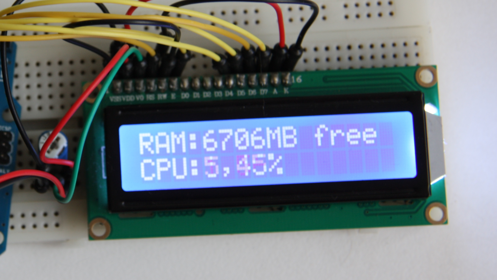
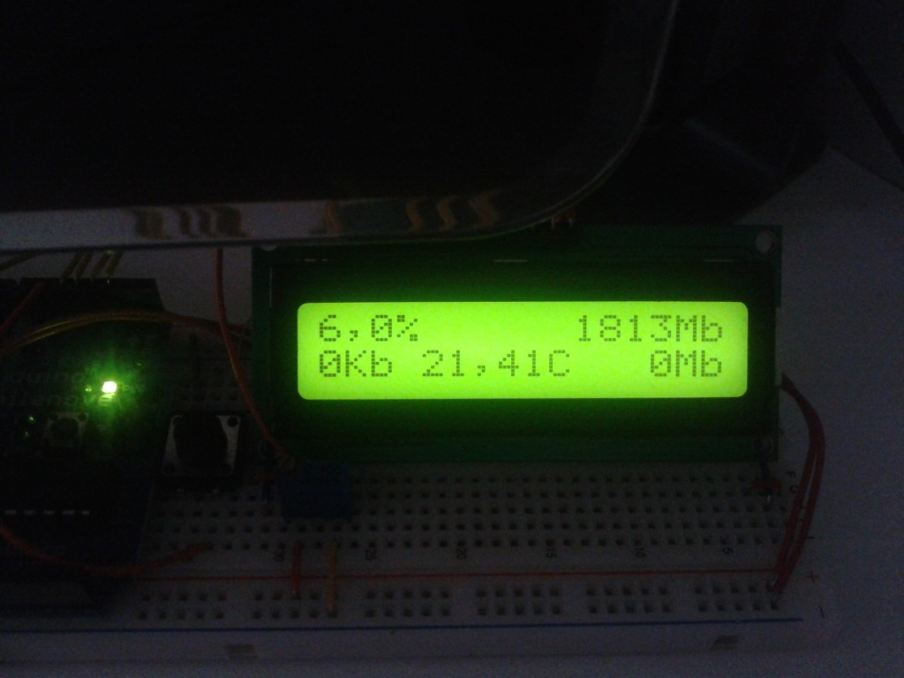
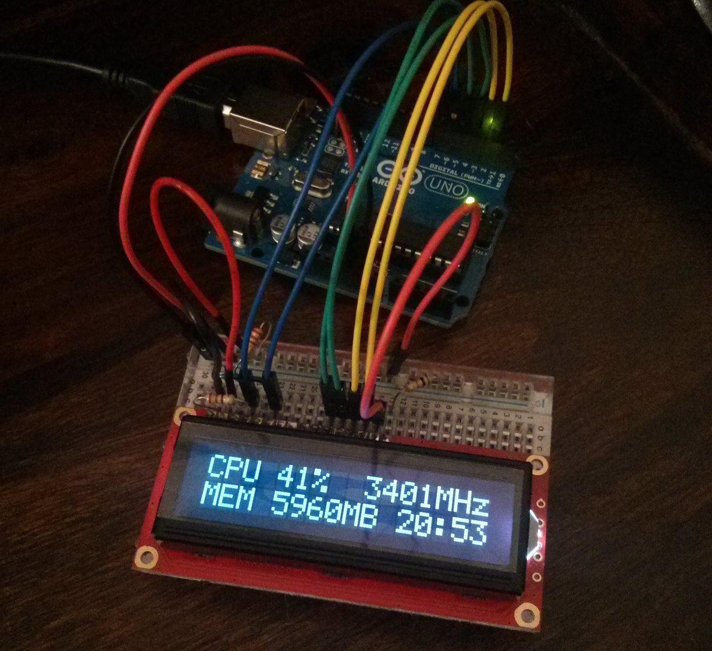
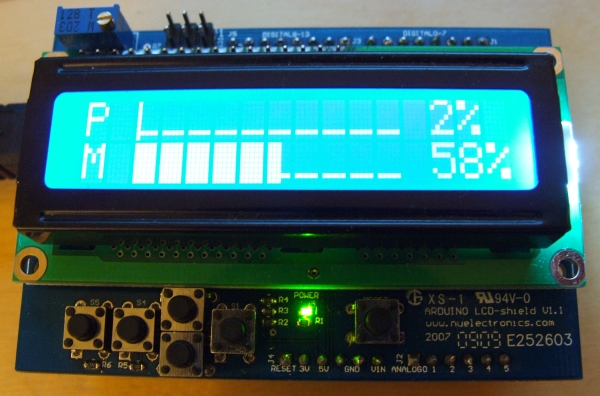
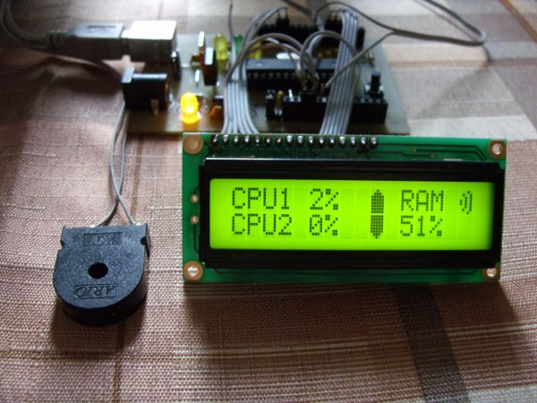

Arduino CPU+RAM usage monitor LCD

http://cxem.net/comp/comp130.php
не работает как должен
http://www.instructables.com/id/Arduino-CPURAM-usage-monitor-LCD/

http://forum.arduino.cc/index.php?topic=171114.0
https://github.com/LorenzoRogai/Arduino-PC-Monitor
не работает
CPU Status DisplayArduino PC Monitor

https://github.com/djbarker/cpu-status-display
на питоне
Arduino & LCD Smartie

http://www.arkadian.eu/pages/203/arduino-lcd-smartie
http://lcdsmartie.sourceforge.net/
буржуйский форум, схемы нет
Мониторинг параметров компьютера на Arduino

http://cxem.net/comp/comp130.php
кривой софт